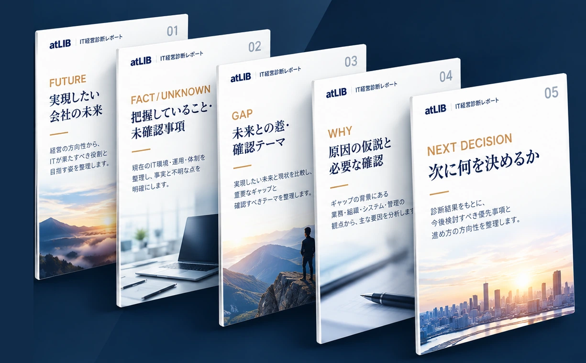

FUTURE
未来から逆算する
会社が実現したい未来を起点に、ITに期待する役割を考える。
ITを企業成長の武器にする
未来から考える。事実で決める。実行し、変化を確かめる。
IT経営KAIZENは、経営が目指す未来から逆算し、技術・運用・管理を横断して、改善の方向性と実行計画を設計するコンサルティングサービスです。今ある人・IT・仕組みを生かし、会社を継続的に良くしていきます。
IT経営KAIZEN 無料診断まずは、会社が目指す姿とITの関係を一緒に整理します。
WHAT IS IT経営KAIZEN?
IT経営KAIZENとは
ITの課題を探す前に、まず「どんな会社にしたいか」を考える。
その未来に向けて、今ある人・IT・仕組みを生かしながら、技術・運用・管理を一体で捉え、改善の方向性を定める。それがIT経営KAIZENです。
会社が実現したい未来を起点に、ITに期待する役割を考える。
確認できた事実と未確認事項・仮説を分け、現状を捉える。
技術・運用・管理を一体で見直し、実行を支援する。
実行後の変化を確認し、次の判断と改善につなげる。
ITを維持するためだけの仕事から、企業成長を支える経営の力へ。
THE GAP / IT MANAGEMENT
ITの情報が経営判断につながらない、3つの状態。
どんなPC・システム・クラウドを使っているのか。契約や更新状況はどうなっているのか。自社のITの全体像が把握できていない。
担当者や外部ベンダーに任せているものの、何が起きているのか、問題がないのか、経営者には見えていない。
レポートは届いていても、それが事業にどう影響するのか、何を優先すべきなのかがわからない。
まずは、自社のITがどの状態にあるのか。
そこから、次の判断が始まります。
3つの改善領域と6つの改善視点を掛け合わせ、
会社の未来に必要な改善の選択肢を設計する。
3×6 APPROACH / THREE DOMAINS
ITの課題を機器やツールだけで捉えず、仕事の進め方や経営判断の仕組みまで一体で見渡します。
技術だけ、運用だけで考えず、3つの領域と6つの視点を掛け合わせる。確認された事実と経営の優先順位を踏まえ、何を変え、何を残し、どこから着手するかを設計します。
3×6は18項目をすべて実施・採点する仕組みではありません。必要な改善の選択肢を設計するための切り口です。構築・移行・運用などの個別作業は、実施範囲・体制・費用を別途定めます。
START WITH THE FACTS / FREE DIAGNOSIS
無料診断では、目指す未来を伺い、把握していること・未確認事項を整理します。すべての課題を断定するのではなく、次に何を判断すべきかを明らかにします。
MANAGEMENT FEEDBACK / FIVE PAGES
実現したい未来を基準に、把握していることと未確認事項、改善の可能性、次の判断を5ページで共有します。AIの整理候補をそのまま結果とせず、担当者が確認・承認してお渡しします。

未来・現在地・差・原因の仮説を整理し、次に何を決めるかを見える形にします。
▲ レポートの構成イメージです
経営者の言葉で目指す姿を共有します。
分かっていることと、まだ確認が必要なことを分けます。
未来に照らし、確認・改善すべきテーマを整理します。
仮説・根拠・確認事項を分けて示します。
そのまま実行／限定的に追加確認／設計Assessment／現時点では進めない、から判断します。
※ 構成を示すサンプルです。各ページの記載内容はお客様の回答・対話・確認結果によって異なります。未確認事項や仮説を確定した事実として扱いません。
HOW IT WORKS
3〜5分を目安に、目指す会社の姿と現在の状況を伺います。
重要なテーマに絞って、担当者が対話・確認します。
レポートをもとに、把握したこと・未確認事項・改善の可能性を共有します。
実行・追加確認・設計Assessment・見送りから判断します。追加確認・Assessmentは別途有料です。
無料診断は改善可能性を発見する工程です。追加調査・設計Assessmentは無料診断に含まれず、内容・範囲・費用をご案内したうえで別途有料にて実施します。
AFTER THE DIAGNOSIS
無料診断では、把握できた事実と未確認事項を整理し、改善の可能性と次に必要な判断を経営者へお伝えします。さらに確認が必要な場合は、対象を絞った追加調査、または本格的な設計Assessmentを、別途有料の支援としてご提案します。実施するかどうかは、内容・範囲・費用をご確認のうえ、お客様にご判断いただきます。
改善の実行は、お客様自身、既存ベンダー、他社、atLIBなどから選択できます。atLIBに委託することを前提にはしません。
FAQ
事前アンケートと60分の対話を通じて、目指す会社の姿、把握できていること、未確認事項、改善の可能性を整理します。診断レポートをもとに経営フィードバックを行い、次に必要な判断を共有します。
はい。経営者や管理部門の方からお話を伺い、分かっていることと確認が必要なことを分けて整理します。「分からない」も有効な回答です。社内にIT担当者がいる場合もご相談いただけます。
無料診断だけで終了できます。対象を絞った追加調査や設計Assessmentは無料診断に含まれず、別途有料です。内容・範囲・費用をご案内し、ご承諾いただいた場合のみ実施します。
いいえ。改善の実行は、自社・既存ベンダー・他社・atLIBなどから選択できます。現在利用しているシステムやベンダーの変更も前提にしません。実行・運用支援をatLIBにご依頼いただく場合は、別途範囲・体制・費用を定めます。
無料診断は、改善の可能性と次に確認すべき事項を見つける工程です。未確認事項を事実として扱ったり、原因を断定したりしません。資料等の収集・確認・分析が必要な場合は、別途有料の支援をご提案します。
追加確認なしで実行する、対象を絞って追加確認する、設計Assessmentで詳しく確かめる、いったん見送る、といった選択肢があります。追加調査・設計Assessmentや個別の実行支援は、必要に応じて別途有料でご提案します。
START WITH THE FUTURE
まずは、これからどんな会社にしていきたいかをお聞かせください。現状を整理し、次の一手を考えるところから始めます。
IT経営KAIZEN 無料診断事前アンケート約3〜5分・60分診断／その後の有料支援は任意
FREE DIAGNOSIS / APPLICATION
まずは申込者情報をご入力ください。受付確定後に、事前アンケートへ進む流れです。
送信成功が確認されるまでアンケート画面へは進みません。